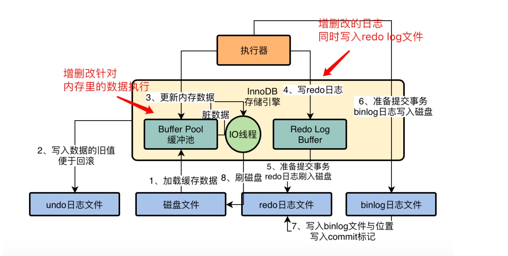
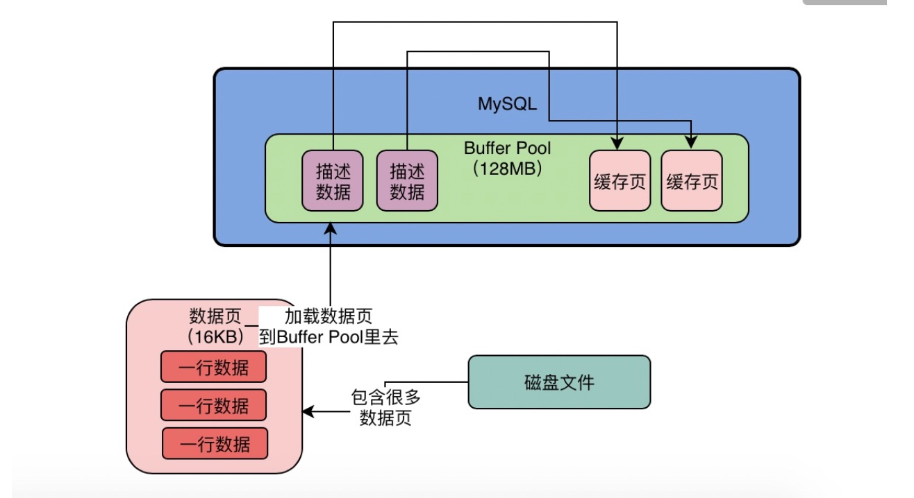
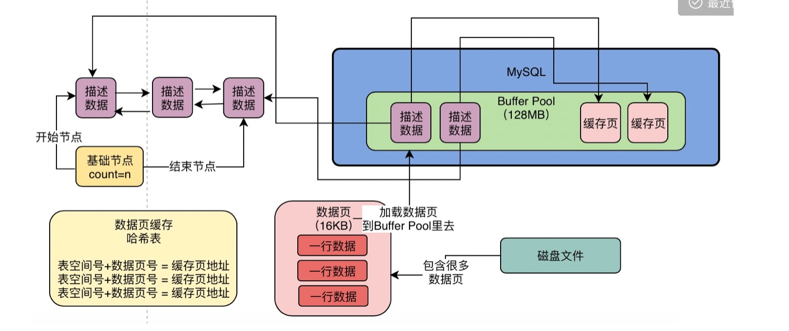
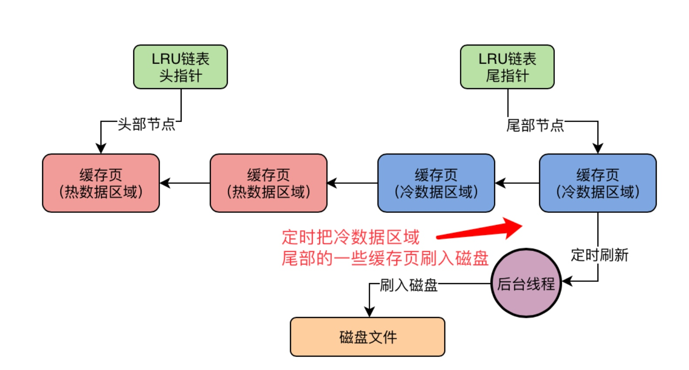

2022/10/05 10:39 上午 posted in mysql mysql架构 结构  buffer pool  缓存页  LRU链表 冷热分离 LRU链表的热数据区域的访问规则被优化了一下，即你只有在热数据区域的后3/4部分的缓存页被访问了，才会给你移动到链表头部去。 刷盘  LRU链表定期把冷数据域的尾部定期刷入磁盘 把Flush 链表中的一些缓存页定时刷入磁盘 多个buffer pool优化
2022/10/05 16:00 下午 posted in mysql 两阶段提交 为什么需要 redo log 是 InnoDB 引擎特有的日志 Server 层也有自己的日志，称为 binlog（归档日志 保证crash-safe 否则那么数据库的状态就有可能和用它的日志恢复出来的库的状态不一致